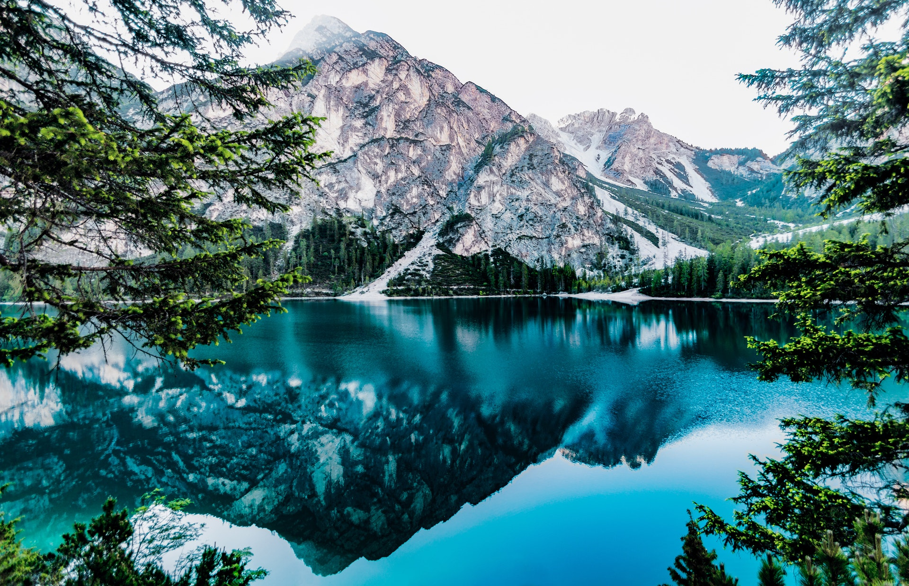

Go hiking in Norway and discover why the locals can’t get enough of nature. Our most scenic landscapes are definitely best enjoyed on foot.
Phone off, out-of-office reply on. When it comes to long-distance hikes, you'd be hard-pressed to find a better country than Norway. With cozy, for-public-use cabins dotting the hills and a landscape that just won't quit, this could be the excuse you've been waiting for.
